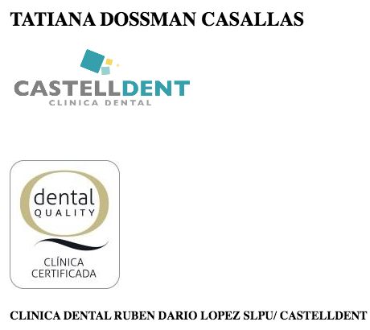
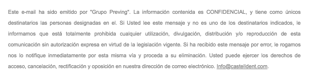

Vecinos
A partir de la publicación de este sitio web, vecinos del inmueble donde se ubica la Castelldent Clínica Dental comunicaron que desde hace tiempo arrastran problemas con ellos derivados de ruidos y vibraciones que proceden de la clínica, probablemente causados por la instalación de un generador eléctrico o similar de manera inadecuada.
Según comentan las molestias son en forma de ruido en las plantas bajas y primeros pisos, así como vibraciones en todos los pisos del inmueble de cuatro plantas. Se entiende que la causa del ruido podría ser una insonorización insuficiente, en cuanto a las vibraciones estaríamos ante una instalación del aparato inadecuada, probablemente junto a algún elemento estructural del edificio, tales como vigas metálicas, que transmiten las vibraciones a lo largo de todo el edificio, inundando todos los pisos con esta molestia que acumula más de un año.
Más allá de cómo se resuelva este problema, desde luego muy grave, llama la atención la respuesta de Castelldent Clínica Dental a un correo electrónico enviado por uno de los vecinos. Dicho correo, respondido por Tatiana Dossmann se limita a decir a este vecino que 'envíe mediciones' de los niveles de ruido.
Es decir, están causando graves molestias a los vecinos de su propio inmueble y cuando estos les advierten de la situación para que procedan a corregirla, dan a entender que efectivamente les están causando problemas de ruido y vibraciones, pero que ellos, Castelldent Clínica Dental, entienden que es legal y toca soportarlo cada día el resto de sus vida.
Hay captura de pantalla de dicha comunicación, con la respuesta escueta e indiferente.
Acerca del sello de 'calidad' DentalQuality
En la imagen del correo electrónico se observa también con un tamaño llamativo un sello que dice DentalQuality. Después de buscar información acerca de tal distintivo, se confirma la sospecha inicial según la cual se trata de uno de los miles de sellos de calidad privados que circulan por el ámbito empresarial, sea el sector que sea.
El procedimiento siempre es el mismo. Una empresa ofrece servicios de 'consultoría, 'marketing' y similares para que pongas en funcionamiento un negocio en un sector particular al cual ellos se dedican. Una vez les has pagado por tales servicios te entregan el sello de 'calidad' que ellos mismos han creado en base a sus criterios, casualmente aquellos por los que has pagado.
En este caso la empresa que ofrece el 'sello de calidad' DentalQuality se llama AE Sinergy y se defina como una 'consultoría ejecutiva' en temas de clínicas dentales. Les contratas para que te monten la clínica y te entregan el sello. En el sitio web de la empresa dicen lo siguiente:
El sello de Calidad DentalQuality® no es algo que se pueda comprar, solo se puede obtener superando una auditoría en la norma AE052013/17, unos criterios de exclusividad de zona y la evaluación final por un comité de doctor@s miembros, cuyo único interés en el proceso de certificación es mantener la reputación y los niveles de calidad del conjunto de las clínicas que lo ostentan, así como asegurar la filosofía de DentalQuality® según la cual, la salud y bienestar de los pacientes está por encima de cualquier consideración económica.

Decir que no se puede comprar no deja de ser un sarcasmo, efectivamente no te lo venden directamente, se trata de que tienes que contratar los servicios de 'consultoría ejecutiva' y ahí sí va incluido. Por otra parte, la norma AE052013/17 es un invento de ellos, no tiene control externo ninguno y se limita a certificar lo que previamente te han vendido.
Como se ha indicado, esta práctica lamentablemente es muy habitual en todos los sectores de negocio, basta con saberlo e ignorarlo. De todas formas, una vez más estamos ante un caso de pagar para 'modular' la percepción pública de algo.
Es habitual encontrar ofertas de trabajo donde empresas cuestionables dicen eso de 'empresa líder en su sector... '', cuando una empresa es líder no necesita decirlo porque todo el mundo lo sabe. En otras ocasiones encontramos anuncios que terminan con eso tan estrafalario de 'anuncio serio', vamos a ver, si una anuncio es serio, no necesitas decirlo. Estos comportamiento nos hacercan bastante a eso de excusatio non petita, accusatio manifesta.
Este caso es lo mismo, que una clínica dental se ajuste a los criterios de calidad establecidos legalmente para el sector es un presupuesto, algo que se da por hecho, en caso contrario se procede a la correspondiente denuncia y la autoridad competente al momento interviene.
Estos sellos de 'calidad' son puro marketing. Ni caso.
Acerca de los 'Avisos de confidencialidad'
Lo que sigue es de lectura voluntaria, un tanto al margen del objeto principal de este sitio web, pero dado que siempre puede haber alguien que objete algo, vamos a ello.
El correo electrónico de Castelldent Clínica Dental que aparece de forma parcial en forma de captura de pantalla incluye también un seguido de advertencias habituales en el ámbito empresarial, en este caso empieza diciendo:
Este e-mail ha sido emitido por "Grupo Preving". La información contenida es CONFIDENCIAL, y tiene como únicos destinatarios las personas designadas en el. Si Usted lee este mensaje y no es uno de los destinatarios indicados... y bla, bla, bla...

Explicado de manera sencilla basta con decir que estos 'avisos de confidencialidad', o como los llamen en cada caso, carecen de recorrido legal, por la sencilla razón de que un remitente no puede imponer condiciones de ningún tipo al destinatario por el simple hecho de enviarle el correo electrónico.
Para que tal circunstancia pueda darse con valided legal es preceptivo que con anterioridad a cualquier comunicación entre las partes, las mismas acuerden las condiciones en forma contractual, de manera preferible mediante el correspondiente contrato-documento, es decir, puesto por escrito.
Que alguien te envíe un correo electrónico con todo un rosario de condiciones sin previo acuerdo contractual no tiene validez ninguna. Obviamente siempre aplican los límites legales de toda la vida a la hora de no difundir comunicaciones que impliquen por un ejemplo una intromisión en el derecho a la intimidad y otros. Pero todo ello ya está recogido por las leyes ordinarias de toda la vida y no hace falta advertencia ninguna. Las que encuentras en un correo cualquiera, en ausencia de contrato previo, se ignora y listo.
En el caso de Castelldent Clínica Dental, dado que Tatiana Dossmann aparentemente es licenciada en derecho por una Universidad en Venezuela (según LinkedIn), se supone que todo esto ya lo sabe, dado que las diferencias entre legislaciones de diferentes países, en este tema, al margen de particulares, no difieren en la esencia.
Este sitio web no tiene Copyright. Todo el contenido es Dominio Público.